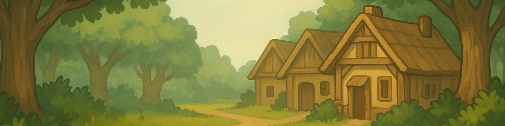
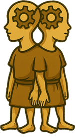
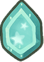
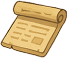
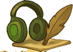
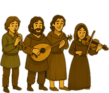
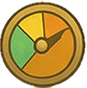
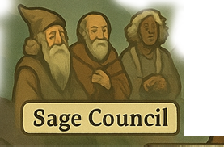
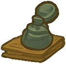
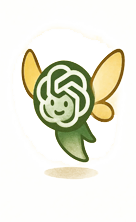

The roadmap I actually use to learn languages
A clear guide to what I focus on as a beginner, what changes at the intermediate stage, and how I refine a language once I can already use it.
Before the stages
A level is useful only when it changes what you do.
I do not treat CEFR labels as identities. I use them as rough signposts. A beginner needs a foundation. An intermediate learner needs enormous contact with real language. An advanced learner needs precision, cultural depth, and honest feedback.
The mistake is doing the same routine forever. The work should change as your comprehension changes.

Beginner · A1–A2
Build comprehension before demanding fluency.
Your first job is to understand the basic structure of the language and recognize enough common words to follow simple material.
My field noteWhen I begin a language, I do not pressure myself to sound fluent. I collect enough structure and vocabulary for the language to start making sense.
Read, listen, and notice patterns. Speaking can begin gently, but it is not the main measurement yet.
Understand the gist of simple texts and build roughly 1,000 well-reviewed words or sentences.
What I do at this stage
- 01Learn the basic logic.
Use a clear beginner course or explanation to understand sentence structure and common grammar.
- 02Start remembering from day one.
Save useful words and full sentences in a spaced-repetition system instead of trusting one-time exposure.
- 03Read things you can partly understand.
Familiar stories, simple articles, and translated books give new vocabulary a context.
- 04Repeat the difficult patterns.
Target common conjugations or grammar until they stop feeling completely unfamiliar.
Recommended tools
Use only what solves the next problem.

Language TransferUnderstand the logic
Excellent for seeing why grammar works, especially in Romance languages. I often finish a course quickly to grasp the core structure.

AnkiRemember vocabulary
Start immediately. Save words with images or full-sentence context. For fast learning, consistent review is not optional.

Simple textsBuild reading intuition
Read stories you already know, simple articles, and comments. Familiar context lets you focus on the language instead of decoding the plot.
Linguno or focused drillsRecognize patterns
Useful for common conjugations. Do not memorize every form at once; repeat enough to make the patterns familiar.
Grammar explainersClear up confusion
Use short videos, a beginner textbook, or ChatGPT for examples. The goal is a useful mental model, not total mastery.
Classes or a tutorOptional structure
Good for guidance and accountability, but they should support—not replace—your own reading, listening, and review.
DuolingoBrief use at the start
Useful for getting familiar with sounds and sentence order. I move on quickly because serious progress requires richer input.
Intermediate · B1–B2
Live inside material made for native speakers.
This is the longest and most important stage. The language stops being a subject and becomes the medium through which you read, watch, listen, write, and connect.
My field noteThis is where the language stops feeling like a course. I follow stories, music, creators, and conversations until the language becomes part of my ordinary day.
Spend as much time as possible with native books, video, podcasts, music, and conversation.
Write, record yourself, and speak often enough to find the gaps between comprehension and expression.
What changes at this stage
You no longer need every resource to teach you. Choose native content you genuinely enjoy, accept partial understanding, and let repeated exposure do its work. Keep collecting vocabulary from real encounters rather than generic lists.
Recommended tools
Turn your interests into an immersion system.
Native readingVocabulary in context
Move into novels, news, blogs, and subjects you love. Keep saving useful sentences to Anki.
Native videoSound, gesture, and culture
Use target-language subtitles when needed. Pay attention to how people speak, not only to the words they choose.

PodcastsUse dead time
Fill commuting, chores, and walking with subjects that interest you. Regular listening trains your ear even when you miss details.

MusicRhythm and memory
Songs make pronunciation, slang, and common phrases memorable. Follow lyrics and explore the culture around the artists.
AnkiKeep the vocabulary growing
Use real sentences from what you read and watch. Cards can become more nuanced as your understanding grows.
Daily writingFind active gaps
Journal about your day and opinions. Use DeepL or ChatGPT to check phrasing, then learn from the correction.
Speaking practiceBuild comfort
Record video journals, talk with AI, and begin using Tandem, Discord, or partners. Messy output is part of the process.

Immersion trackingMeasure contact hours
Track active reading, watching, and listening. Progress is easier to understand when you know whether you have accumulated 300, 500, or 1,000 hours.
ChatGPTImmediate feedback
Use it to simulate conversations, correct writing, explain errors, and suggest more natural phrasing.
DeepLCheck difficult phrases
Useful when a complex sentence blocks you or when you need alternative wording. Treat it as support, not a replacement for thinking.
Advanced · C1–C2
Refine the details that still mark you as an outsider.
At this point, broad exposure is not enough by itself. You need precise feedback, complex subjects, and deeper attention to tone, rhythm, register, humor, and cultural context.
My field noteOnce I can function comfortably, the obvious progress slows down. I stop studying everything and start hunting the few details that still sound imprecise or culturally out of place.
Target the specific errors, habits, and gaps that survive after thousands of ordinary encounters.
Follow debates, history, media, humor, and the subjects that native speakers discuss without explanation.
Advanced does not mean finished.
You can already communicate. The work now is to sound more natural, express complex ideas with control, and understand the shared context behind the language. Choose weaknesses deliberately instead of reviewing everything.
Recommended practices
Make feedback more specific.

Native interactionAsk for direct correction
Have regular, substantial conversations. Tutors and advanced partners can identify subtle patterns you no longer notice yourself.
ShadowingRefine pronunciation
Choose one or two speakers whose accent and delivery you admire. Imitate rhythm, intonation, and pronunciation closely.
Advanced contentStretch comprehension
Watch debates, lectures, documentaries, and dialect-heavy material. Read literature, long essays, and academic work.
Refined outputExpress difficult ideas
Write arguments and discuss abstract themes. Request feedback on clarity, tone, precision, and style—not only grammar.

Targeted grammar and vocabularyFix what remains
Use monolingual dictionaries and context tools to study the exact structures, idioms, or registers that still cause trouble.

ChatGPTTest nuance
Compare alternative phrasings, explore register, rehearse complex scenarios, and ask for detailed style feedback.
Cultural contextUnderstand the shared world
Study humor, history, references, subtext, and social expectations through wide reading and long-term participation.
The method in short
Absorb. Use. Refine.
Beginner: understand the structure, read simply, and build base vocabulary.
Intermediate: surround yourself with native input and start using the language every day.
Advanced: correct the subtle details and live more deeply inside the culture.
Build the routine around what you love. Track the hours. Change the work when your needs change.
Continue reading Polyglot Papers